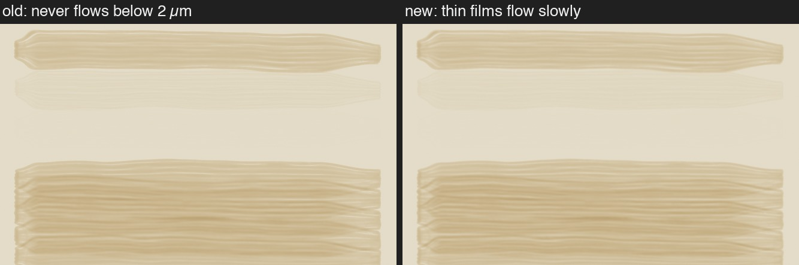
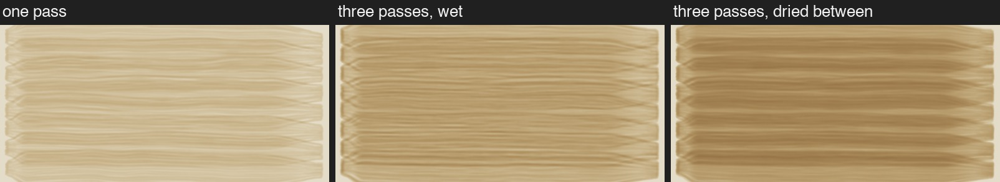
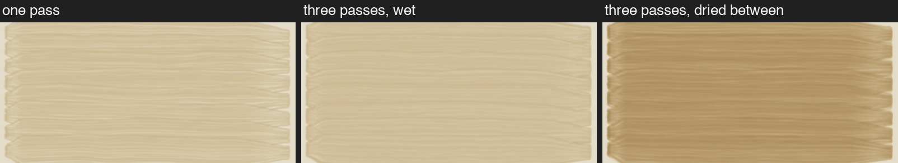
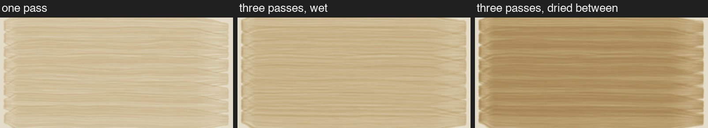

Raw umber on a pale ground. Every picture shows the paint after it has finished flowing and dried.
Top three lines: single strokes thinned with half, three quarters and nine tenths spirits. Below: a broad wash thinned half. Before the change, paint thinner than 2 µm never moved at all; now it moves, but very slowly (the thinner the film, the slower).

The difference is hard to see: on average 0.35 grey levels out of 255, at most 10. The change matters mostly so that very thin washes aren't frozen in place.
Your rule: a pass over a wet wash mostly moves the paint around; a pass over dry paint adds a layer. Each version shows one pass, three passes while still wet, and three passes with the paint left to dry in between. The numbers are the paint's average thickness in the middle.
One pass 2.65 µm · three wet 5.20 µm · three dried between 8.07 µm.

One pass 2.00 µm · three wet 2.19 µm · three dried between 6.04 µm.

One pass 2.23 µm · three wet 3.21 µm · three dried between 6.76 µm.

Versions 2 and 3 also make a single pass a little thinner where its own strokes overlap. Code: thinner::tests::wet_rules, flow_pictures.